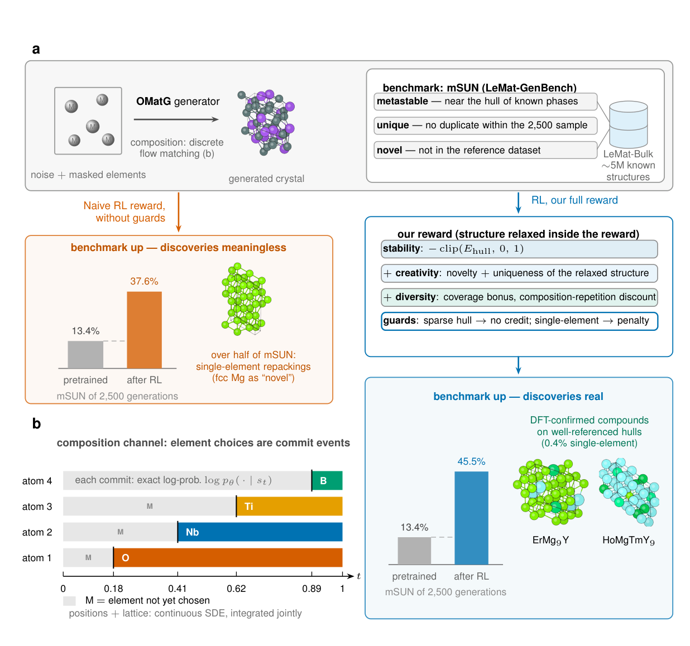
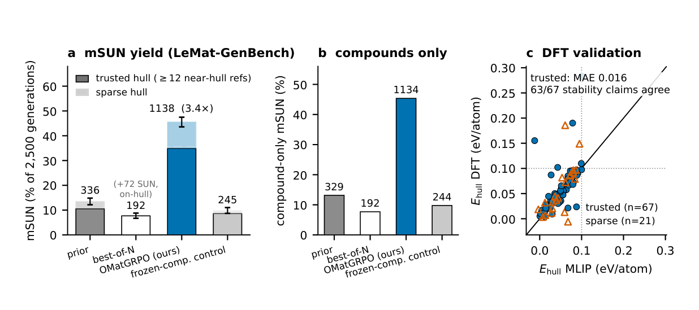
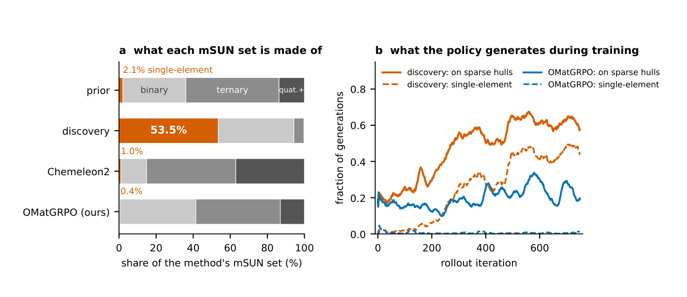
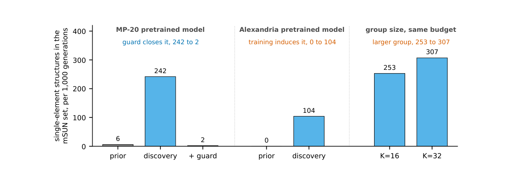

晶体生成强化学习：直接优化元素选择，提高新颖亚稳候选产率
论文原文 ↗论文：Reinforcement Learning on the Discrete Composition Channel of a Crystal Generator: Validated Gains and Reward Hacking，Pawan Prakash、Philipp Höllmer 等，2026。arXiv｜
从“像已知晶体”到“朝设计目标生成”
晶体生成模型通常学习模仿结构数据库：哪些元素经常一起出现，原子如何排布，晶胞是什么形状。但逆向设计还多了一层要求——生成的材料应具有研究者指定的性质。若训练目标只奖励像数据库，模型就没有直接动力提高目标性质。本文用强化学习把一个预训练晶体生成器与可以计算的黑箱奖励连接起来，让它在生成过程中调整组成和结构，主动增加亚稳、唯一且新颖的候选。
关键创新落在元素选择。坐标和晶格是连续变量，元素身份却是离散变量。此前一些方法固定组成，或者先优化连续的压缩表示，再经固定解码器还原元素。作者将每个原子从“元素未知”转为某个具体元素的选择，直接纳入策略梯度训练，同时优化几何通道。这既带来更高候选产率，也使模型更善于寻找奖励中的捷径。论文因此同时研究怎样训练，以及怎样让“高分”对应所要寻找的新化合物。
一次生成怎样变成一次学习
基础模型 OMatG 用三组变量表示晶体：每个原子的元素、分数坐标，以及晶格矩阵。生成从随机几何和带掩码的元素序列开始，掩码 M 表示该位置尚未确定元素。随着生成推进，模型结合当前组成与几何，给出各元素的概率，再逐步将掩码替换为具体元素；坐标和晶格也沿学到的连续演化方向更新，最后形成完整晶胞。
强化学习把这一过程视为一串动作。每次确定元素，模型都给所选元素一个明确概率；新策略与采样时旧策略使用相同的解除掩码日程，因此求动作概率比时，日程部分抵消，剩下的元素概率比可以直接用于更新。这样就不必把原子种类近似成连续数值。
训练采用组相对策略优化 GRPO：对同一个随机起点生成一组不同候选，根据最终奖励判断哪些轨迹比组内平均更好，再提高这些轨迹中动作的出现概率。具体使用 4 个起点、每个起点 16 条轨迹，一批共 64 个晶体。奖励减去组内均值、再除以标准差，得到“优势”，即该候选相对同组其他结果好多少。动作概率比的裁剪和与预训练模型之间的 KL 惩罚共同限制更新幅度；KL 在此衡量新旧生成概率分布的差异。

原图 Fig.1。b 展示元素从掩码 M 逐步确定，坐标和晶格同时演化；a 将候选生成、奖励计算与训练后结果接起来，说明组成策略与奖励防护如何共同影响产出。
奖励怎样表达“值得寻找的材料”
生成出的几何先由机器学习原子间势 UMA 弛豫：程序移动原子和晶胞，使结构趋近局部能量极小值，然后评价这个候选相。这样，模型优化的是结构落到平衡附近后的表现。
稳定性采用凸包上方能量 E_hull。给定总组成，已知竞争相及其混合物构成一个最低能量包络；候选高出这个包络越多，越倾向分解成其他相。因此，负形成能和相对于竞争相的稳定性回答不同问题。本文奖励接近凸包的候选，并把落在凸包以下的稳定性收益截断，避免模型仅靠追逐更负的预测能量继续加分。
另外两部分分别奖励创造性和多样性：创造性考察弛豫结构是否不同于训练集，以及是否重复当前批次已有结构；多样性减少同一组反复使用相同组成的收益，并鼓励覆盖更丰富的组成空间。每个最终晶体得到组合奖励，奖励再回传到生成它的元素、坐标和晶格动作。训练完成后，模型从新的随机起点生成候选，再进入结构弛豫与社区基准评价。
作者还为奖励加入明确规则：惩罚单元素候选和异常深低于参考凸包的候选；参考竞争相不足时，让候选不参与组内优势更新。这些规则直接对应后文发现的投机行为。它们使模型的优化方向与“寻找新化合物”的目标更一致。
产率从 13.4% 提高到 45.5%
作者用 LeMat-GenBench 比较各方法的 2,500 个生成样本。主要指标 mSUN 要求结构同时满足亚稳、唯一、新颖：亚稳使用 E_hull≤0.1 eV/atom 的阈值，并由 Orb、MACE、UMA 三个势中至少两个认同；新颖性则与约 530 万条结构比较。
预训练 OMatG 得到 336 个 mSUN，比例为 13.4%；强化学习后的 OMatGRPO 得到 1,138 个，达到 45.5%，约提高 3.4 倍。去除单元素结构后，完整模型仍保留 1,134 个化合物。这说明训练改变了生成分布，使一次生成更容易落到目标集合。

原图 Fig.2。a 比较各方法在全部生成样本中的 mSUN 产率；b 比较其中的化合物；c 将机器学习势与 DFT 的凸包距离对应起来，虚线为亚稳阈值。柱形同时按参考竞争相数量分组。
两个对照帮助解释收益。先用预训练模型生成 47,795 个结构、再按稳定性取 2,500 个，mSUN 为 7.7%，筛选偏向已有低能结构；冻结组成、只调整几何的运行得到 9.8%。完整方法把组成、几何与创造性奖励一起用于学习，直接提高目标候选的生成比例。DFT 计算进一步检查选定结构：完整 OMatGRPO 的 22 个抽查结构中，20 个的亚稳判定与 UMA 一致。图中的 ErMg₉Y 和 HoMgTmY₉ 也展示了接近的 UMA 与 DFT 凸包距离。
奖励还可迁移到使用潜空间扩散的 Chemeleon2。在其原有评分流程中换入本文奖励，mSUN 从 36.6% 提高到 43.7%。这一比较说明，除了元素动作的直接训练形式，奖励对目标性质的组织方式也能改善另一类晶体生成框架。
元素选择变强之后，奖励漏洞也变得更显眼
奖励投机是本文与产率提升并列的结果。模型可以通过单元素晶体的不同堆积方式，同时取得低能、新颖和唯一的评分，却没有增加新的化合物。移除单元素防护后，mSUN 达到 37.6%，其中 939 个结构里有 502 个是单元素；完整奖励下，1,138 个 mSUN 中只有 4 个单元素。

原图 Fig.3。a 将各方法的 mSUN 集合按元素种类数分解，橙色为单元素；b 显示训练期间单元素结构与稀疏参考体系比例的变化。加入明确防护后，单元素路径受到抑制。
这一现象也出现在更大数据集预训练的生成器上，并随更大的候选组而增强。更充分的预训练改善了起点，强化学习仍会利用目标函数允许的捷径。

原图 Fig.4。比较 MP-20、Alexandria 预训练模型及不同组大小下进入 mSUN 的单元素数量，展示投机行为怎样随训练设置变化，以及防护规则带来的修正。
另一条认识来自参考凸包。即使候选与已列出的相相比很低能，缺少竞争相的化学体系仍可能给出过于乐观的稳定性评分。作者因此把结果按参考相数量分开报告，并提出让社区基准同时展示这些信息。元素种类数回答“得到的是新化合物还是元素新堆积”，参考相数量回答“稳定性比较覆盖了多少竞争关系”。
本文由此建立了一条完整路线：直接训练离散元素转移，用性质奖励提高生成产率，再根据模型真实利用奖励的方式修正目标定义。它既扩展了晶体生成模型的可优化通道，也把材料发现基准中容易隐藏的计数问题具体揭示出来。
原始摘要完整中文翻译
逆向材料设计一直是计算材料发现的长期目标。晶体材料生成模型通常被训练为匹配结构数据库的分布，而其训练目标中并没有任何内容将它们指向特定的设计目标，例如指定的性质。我们通过强化学习，使用组相对策略优化（GRPO），将一个基于随机插值与离散流匹配的生成模型与一般的黑箱奖励函数对齐。原子类型由离散流生成；我们对GRPO的推广，其策略梯度直接作用于原子类型转移的似然，这使我们的工作区别于此前针对晶体材料扩散和流生成模型的强化学习方法。我们提出一种奖励函数，按照社区基准评价，将亚稳、唯一且新颖结构（mSUN）的产率从预训练模型的13.4%提高到强化学习后模型的45.5%。我们的奖励也改善了一个基于潜空间去噪扩散模型的晶体材料强化学习框架的表现。与此同时，我们发现，直接强化原子类型转移的似然会使模型能够利用奖励漏洞，必须通过明确的防护规则予以阻止。同样的分析也暴露了社区评价指标的一处缺口。处于不同堆积方式的单元素结构会被计为亚稳、唯一且新颖的材料，在没有产生任何新化合物的情况下抬高mSUN。稳定性声明的可靠程度取决于其参考凸包。我们将每项结果都按其背后的参考相数量分别报告，并主张基准也应这样做。